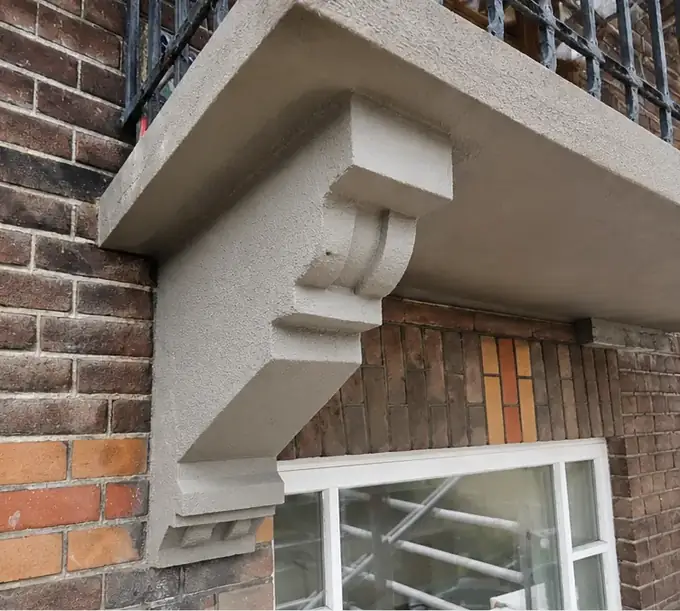
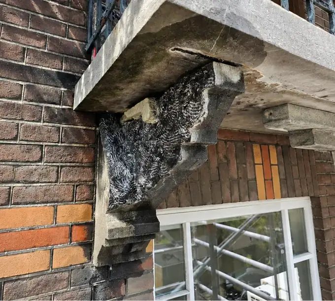
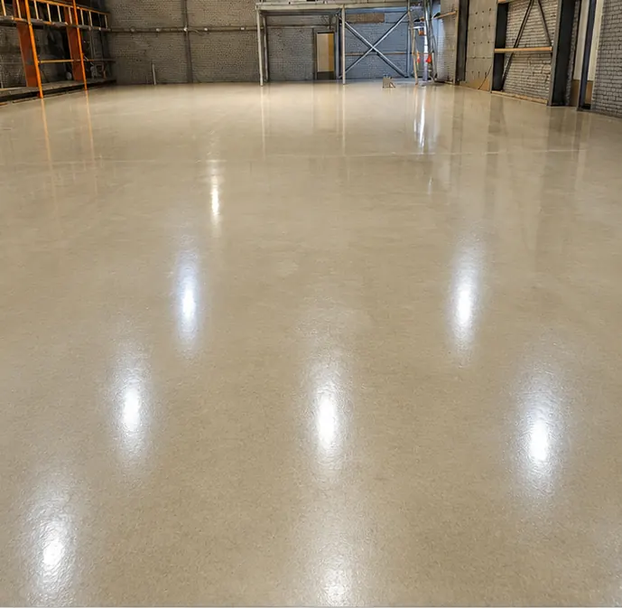
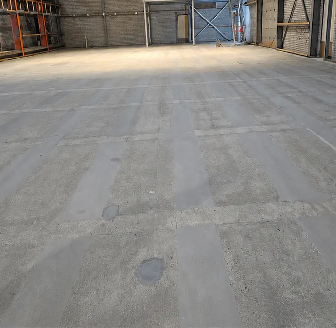

De betonspecialist voor VvE’s, woningcorporaties en particulieren
Betonrot, scheuren, lekkage of een versleten vloer? Wij inspecteren gratis op locatie, maken een helder herstelplan en voeren het uit volgens NEN-EN 1504 en CUR-Aanbeveling 118.
Telefonisch bereikbaar ma–vr 07:30–17:30 · Noord-Holland en heel Nederland


VóórNaBetonrot aan een draagconsole, hersteld. Sleep om te vergelijken.
- VCA-gecertificeerdVeilig werken op locatie
- NEN-EN 1504Europese norm voor betonherstel
- CUR-Aanbeveling 118Richtlijn voor betonreparatie
- 1 aanspreekpuntVan inspectie tot oplevering
- Gratis inspectie op locatieOfferte vrijblijvend
Welk probleem heeft u?
Begin bij wat u ziet. Wij vertellen u wat erachter zit en hoe wij het oplossen.
- ScheurenHaarscheuren tot watervoerende scheuren
- Betonrot of roestvlekkenAfbrokkelend beton, zichtbare wapening
- Lekkage of vochtKelder, souterrain, parkeerdek
- Gladde of versleten vloerAntislip en slijtvaste coatings
- Balkon of galerijHerstel, dekvloer en coating
- ParkeergarageVloeren, scheuren, antislip
- Constructieve schadeKolommen, liggers, consoles
- Weet u het niet zeker?Start de schadecheck: 7 vragen, direct een eerste inschatting.
Vóór en na: ons werk
Echte projecten van Betontechnieken020. Sleep de schuif om het verschil te zien.

 VóórNa
VóórNa

VóórNaUitgelichte projecten
Voor wie wij werken
VvE’s
Een planning met zo min mogelijk overlast voor bewoners, duidelijke communicatie en één vast aanspreekpunt voor het bestuur.
Woningcorporaties
Resultaatgericht meerjarenonderhoud: vaste prijzen, vaste kwaliteitsnormen en minder faalkosten.
Vastgoedbeheerders
Wij nemen het technisch beheer uit handen, van inspectie tot oplevering, met een communicatieplan per complex.
Particulieren
Uw balkon vaak binnen 1 dag gecoat en na 60 minuten weer beloopbaar. Weinig overlast, een strak resultaat.
Zo werken wij
Van de eerste inspectie tot het onderhoudsadvies: u weet vooraf waar u aan toe bent.
Inspectie op locatie
Wij bekijken de schade en vertellen u wat er nodig is. Gratis en vrijblijvend.
Herstelplan en offerte
Een gedetailleerd reparatieplan, afgestemd op uw project en uw planning.
Uitvoering
Door opgeleide, VCA-gecertificeerde specialisten met eigen materieel en wagenpark.
Oplevering en onderhoudsadvies
U krijgt advies over nabehandeling en onderhoud, zodat het herstel lang meegaat.
Ook gevelherstel nodig?
Voor gevelherstel, gevelrenovatie en gevelonderhoud verwijzen wij u naar ons dochterbedrijf Geveltechnieken020*. Doordat wij nauw samenwerken, stemmen wij onze kennis en werkzaamheden op het gebied van beton- en gevelherstel optimaal op elkaar af.
Bezoek Geveltechnieken020 (opent in nieuw venster)- Voegwerk
- Metselwerkherstel
- Scheurherstel
- Gevelreiniging
- Gevelimpregnatie
- Lateiherstel
- Schoorsteenherstel
- Complete gevelrenovaties
Dat hangt af van de omvang van de schade, het type reparatie, de bereikbaarheid van het oppervlak en de materialen. Na een gratis inspectie op locatie ontvangt u een offerte op maat.
Bij betonrot roest de stalen wapening in het beton. Het staal zet uit en drukt het beton kapot. Wie wacht, krijgt steeds meer schade en een minder sterke constructie. Ziet u afbrokkelend beton of roest? Laat het dan direct beoordelen.
Voor particulieren brengen wij een nieuwe balkoncoating vaak binnen 1 dag aan. Na 60 minuten is het balkon weer beloopbaar.
Met ervaring kan dat. Zonder ervaring is een fout snel gemaakt, en dan begint u opnieuw. Zo bent u uiteindelijk duurder uit.
Gratis inspectie op locatie
Wij bekijken de schade, adviseren eerlijk en maken een heldere offerte. Vrijblijvend.